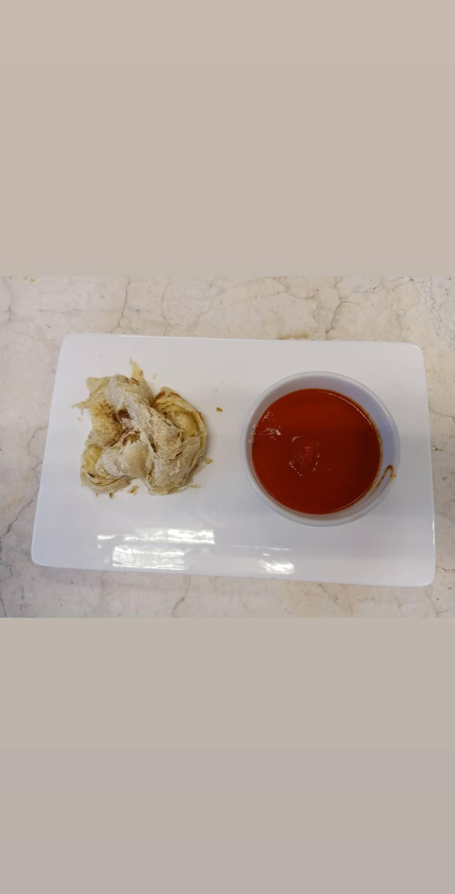

Asian Cuisine

Chicken Murgh Makhani & Paratha
| Marinasi Ayam | Paha Ayam (300g) + Yogurt (40g) |
|---|---|
| Kuah Gravy | Tomat (300g), Mete (25g), Mentega & Krim (@25g) |
| Adonan Paratha | Terigu (250g) + Susu Segar (75g) |
Catatan Masak
Mentega dan krim dimasukkan setelah api kompor mati sambil diaduk cepat biar kuahnya halus dan tidak pecah minyak.